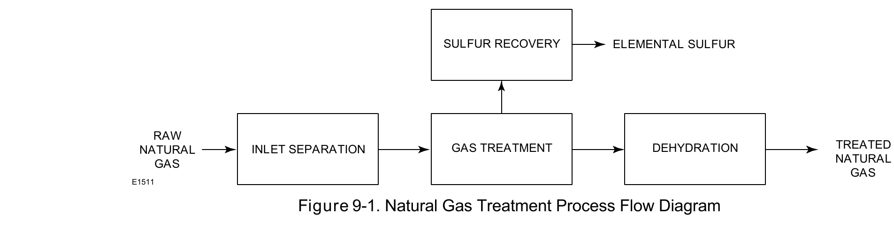

Process-Train Application

Natural gas treatment is a sequence, not a single process: raw gas to amine treatment (acid-gas removal) to dehydration produces pipeline-quality gas; sulfur recovery handles what amine treatment pulled out.
Fisher Control Valve Sourcebook — Oil & Gas (© 2013 Fisher), Chapter 9 "Natural Gas Treatment," Figure 9-1 (drawing number E1511, printed p. 9-1, the chapter's opening page) — "Figure 9-1. Natural Gas Treatment Process Flow Diagram." — used directly. Component Index: ogas-cmp-natural-gas-treatment-process-flow.